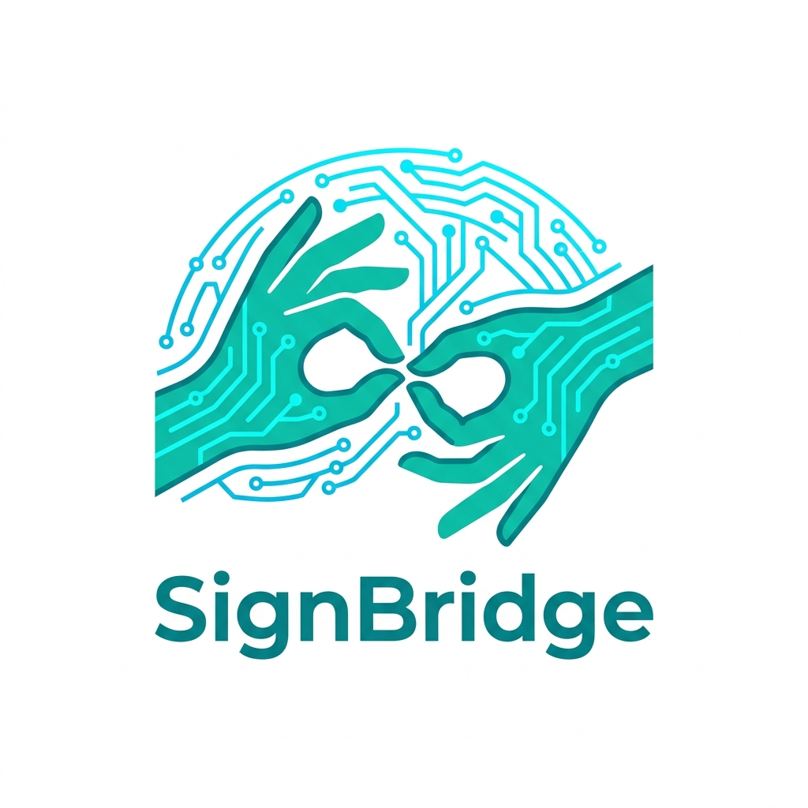

Bidirectional System for Indian Sign Language in Healthcare
A research-driven bridge connecting 18 million deaf and hard-of-hearing Indians with medical professionals — through real-time ISL recognition & animated translation.
Academic Year 2026–27 · B.Tech Major Project
A bidirectional translation system enabling seamless, unassisted communication between medical professionals and deaf patients — no interpreter required.
ISL → Text / Speech
Computer-vision pipeline interprets live gestures → medical text or audio in real time.
Speech / Text → ISL Avatar
Doctor's words translate into accurate ISL animations via a 3D avatar — real time.
Healthcare-First Design
Medical vocab optimised, privacy-first, deployable on standard clinical hardware.
Doctor ↔ Patient
No interpreter. No written notes. No privacy compromise. Fluid, real-time communication in both directions.
Three pivotal research axes form SignBridge's foundation:
INCLUDE Dataset Benchmarking · Das et al. 2022
Only paper benchmarking real dynamic ISL on the public INCLUDE dataset — our Stage 1 baseline.
SL Translation Survey · 2024 · 146 Papers
Maps the full field 2011–2024; quantifies ISL imbalance (isolated >> continuous) — informing our gap analysis.
Transformer Empirical Study · Shahin & Ismail 2025
Tests 4 Transformer variants on sign gloss-to-text translation — directly applicable to our Stage 2 pipeline.
Key Field Insights
🏆 Two Dominant Tracks
Landmark-based (edge-fast) vs CNN+Attention (high-accuracy). We combine both for the best of each.
🚩 Critical Gap: Continuous ISL
Field heavily skewed toward isolated/static signs. Real-world continuous ISL is largely unsolved.
💡 Intermediate Rep. Pattern
Keypoint sequences → Gloss intermediary. Papers that skip it degrade badly on OOV words.
Stage 1 · ISL Recognition
Stage 2 · Translation
Why this architecture wins:
Avatar Path: Speech → NLP Gloss → ISL Dict Lookup → 3D Skeleton Animation
Our review of 20+ papers revealed structural gaps in current ISL research:
Recurring Failure Points in Existing Systems
SignBridge's Novelty Claims:
Vision Layer
ML Models
NLP / Output
Infrastructure
Dataset
Frontend / UI
| System / Approach | Bidirectional | Continuous ISL | Healthcare-Specific | Indian Context | Real-Time |
|---|---|---|---|---|---|
| ✦ SignBridge (ours) | ✓ | ✓ | ✓ | ✓ | ✓ |
| Generic SL Apps (ASL-focused) | ✗ | ~ | ✗ | ✗ | ~ |
| Academic ISL Models (Das et al.) | ✗ | ~ | ✗ | ✓ | ✗ |
| Human ISL Interpreter | ✓ | ✓ | ~ | ~ | ~ |
| Written Notes / Family Proxy | ✗ | ✗ | ✗ | ~ | ✗ |
Indian-specific, not ASL/generic
Doctor speaks + Patient signs
Healthcare vocab & privacy-first
Primary deployment targets in Year 1:
OPD Consultation Rooms
Doctor-patient intake and diagnosis conversations.
Emergency Triage
Fast symptom communication in critical situations.
Pharmacy & Prescription
Medication instructions and follow-up guidance.
Medical Training Simulation
Train healthcare workers in deaf patient communication.
Broader Vision (Year 2–3)
"Aligning with UN SDG 3 (Good Health) & SDG 10 (Reduced Inequalities) — accessible healthcare is a fundamental right."
⚠️ Data Scarcity (ISL)
ISL has limited annotated datasets compared to ASL/BSL — a structural research imbalance.
Mitigation: INCLUDE dataset + custom collection + transfer learning from ASL pretrained models.
⚠️ Real-World Variability
Lighting, background clutter, signer variation in live clinical settings.
Mitigation: MediaPipe landmark-based input (agnostic to background), data augmentation, domain randomization.
⚠️ Non-Manual Cues
Facial expressions & head movements carry ISL grammatical meaning that hands alone can't convey.
Mitigation: MediaPipe Holistic captures face, body, and hand landmarks simultaneously.
⚠️ OOV Medical Terms
Out-of-vocabulary medical terminology not present in the standard ISL dictionary.
Mitigation: Gloss intermediary + finger-spelling fallback + custom medical vocabulary expansion.
SignBridge is not just a translation tool — it's a targeted research effort for 18 million Indians who have been shut out of their own healthcare.
Open Questions & Next Steps
Seeking faculty guidance on ISL corpus partnerships · Exploring collaboration with AIISH Mysore · Formalising project scope & guide allocation
Thank you · Questions welcome